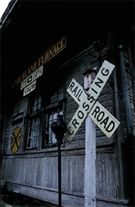
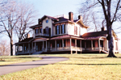
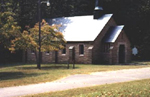

|
© 2005 Dickson County Chamber of Commerce - 119 Highway 70 E., Dickson, TN 37055-2080 phone: (615) 446-2349 fax : (615) 441-3112 contactus@dicksoncountychamber.com |
|
||
Click on one of the choices
in the right column
for more information »

Dickson County was created by an act of the Tennessee General Assembly, meeting in Knoxville, on November 3, 1803, from portions of Robertson and Montgomery counties. This new county was named for Dr. William Dickson, a Nashville physician, who also served as Speaker of the Tennessee House of Representatives and as a U. S. Congressman. Dickson County was organized as the 25th of the of Tennessee's 95 counties.
The fertile soils and abundance of natural resources drew settlers to this area of the Western Highland Rim in the early 1790's. North Carolina Revolutionary War and Tennessee land grants assured large tracts of land at little of no cost to these pioneers. The discovery of iron ore provided the foundation for the area's first industrial development. James Robertson,"Father of Tennessee" discovered the first iron ore veins in Cumberland Furnace and established the first iron works in middle Tennessee.
On August 4,
1804, an act of the Tennessee General Assembly created the Town of Charlotte
to serve as "The Seat of Dickson County Government." The county
seat is named for Robertson's wife Charlotte. The Town of Charlotte was the
center of commerce, industry and government until the advent of the Civil
War. With the completion of the railroad from Nashville to the
Tennessee River at the end of the War, the focus shifted to the southern end
of the county. Industry and commerce followed the rail lines leaving agriculture,
the iron industry and county government as the mainstays of its northen section.
Throughout it's 200 year history, Dickson County has produced many notable
citizens who have significantly contributed to the development and a quality
of life style on regional and state levels including a three-term governor,
congressmen, state legislators, a Tennessee Supreme Court justice, a noted
Tennessee historian, iron masters, as well as industrial, business leaders,
and local residents.
Researched and
compiled by:
Linda Parker, Dickson County Archivist
Sherry Kilgore, Historian
Dickson County Archives
“Family History”
Get involved in America’s new favorite pastime. Trace your genealogy through the new Dickson County Archives!
To assist with genealogy, the Dickson County Archives has the following records: Marriage, Will, Deed, Estate Settlement Books, County Court Minute Books, Chancery and Circuit Court Minutes Books, and Proper Tax Books. Loose records available- Marriages, Estate Settlements, County Court, Chancery, Circuit Court, some births and deaths.
P.O. Box 155, Charlotte
Call Linda Parker at 615-789-4171 Ext. 307
Cumberland Furnace Historical Village
"1st Industrial Community"
 Over 22 historical buildings! Don’t miss the village built around the iron furnace that supplied the army with cannon balls, gun powder and whiskey during the civil war. Follow the Cumberland Furnace brochure for a guided tour of the historic buildings.
Over 22 historical buildings! Don’t miss the village built around the iron furnace that supplied the army with cannon balls, gun powder and whiskey during the civil war. Follow the Cumberland Furnace brochure for a guided tour of the historic buildings.
119 Hwy 70 East, Dickson
1-877-718-4967
Historic Charlotte Courthouse Square
“Oldest Working Courthouse in Tennessee”
In the square Cumberland Presbyterian Church built by slave labor, the Old Jailors House, Hickerson Hotel plus many more structures built in the 1800s. See the Historic Charlotte Tennessee brochure historic details.
119 Hwy 70 East, Dickson
1-877-718-4967
Historic Downtown Dickson
Just off the railroad you will find, not only the Old Train Depot., but also the birthplace of Frank Clement in the Halbrook Hotel. See the War Memorial Building that is one of only two Depression-era War Memorial Buildings in the state.
315 Broadview Drive, Dickson
615-446-4988
Drouillard House and Conference Center
“Dickson County’s Historical Jewel”

Built in 1868 and restored in 1997, the beautiful mansion is only open to the public on a few days a year. Call to find out more about having your conference or retreat at this beautiful historic home.
1044 Old Highway 48 North, Cumberland Furnace
615-789-6609
www.onsiteworkshops.com/tour/mansion.html
Montgomery Bell State Park

With remains from the iron furnace that was once on the land and cemeteries dating back to some of the earliest settlers in Dickson County, this state park is rich with history.
Open 24 x 7.
Located on Hwy 70 E, Burns
1-866-836-6757
www.state.tn.us/environment/parks/montbell/
Old Spencer Mill
“1800’s Grist Mill”
The 1800’s double stone Grist Mill offers tours, camping, interpreters, and demonstrations. The historical site on Parkers Creek has a 4,000 sq. ft. banquet facility and catering service perfect for church and family reunions, weddings and receptions. (Equip with heating, air and handicap availability)
399 Old Spencer Mill Road, Burns
615-412-5169, reservation only, group rates by appointment
www.oldspencermill.com